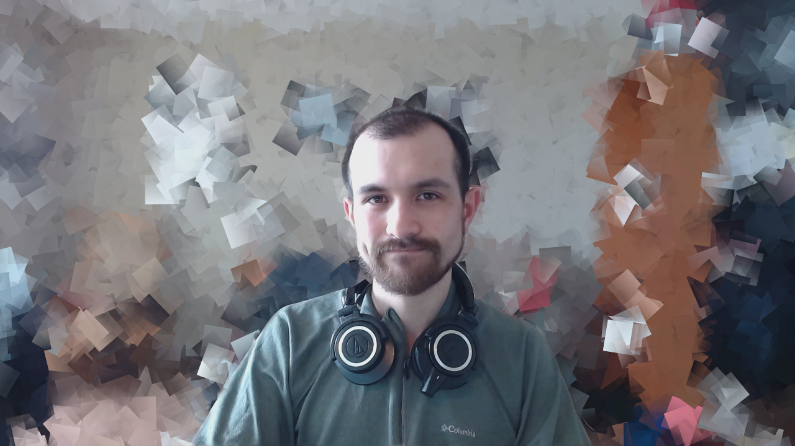
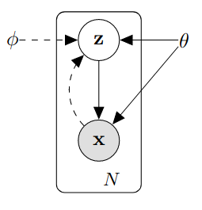

For a while, I’ve been struggling to understand variational autoencoders (VAE’s) at a satisfactory level. An initial pass produced a bit of understanding, but I got sucked back in when I tried to understand Dalle-E, which led me to try to understand diffusion models, which directed me back to going over the techniques used in variational autoencoders again. Some day I will write a Johnny-come-lately post about the different components of Dall-E, but today is about VAE’s.
Before I jump into things, my default disclaimer that I am probably not someone who should be writing authoritative-sounding articles about VAE’s - this is an exercise in understanding through explanation. Also, I think its just generally useful to have as many angles at explaining something available as possible – the sources I used to understand VAE’s had great diversity in the ways they explained recurring topics and how much to delve into certain pieces of the puzzle. Here are some resources that I have found useful and are probably more trustworthy (maybe mine is more humorous?):
- Paper by Kingma and Welling\(^{[1]}\)
- This tutorial by some people at UC-Berkeley and Carnegie Mellon\(^{[2]}\)
- This blog post\(^{[3]}\)
- This other blog post\(^{[4]}\)
Much of the material here is going to be a re-hash of what has been presented in these. If you notice something wrong, please submit a pull request or open an issue in the git repo for this blog to correct my mistake.
Setup
Alright, so variational autoencoders are cool, they can produce synthetic samples (images) that are realistic and serve as great material for articles and Reddit posts about how ‘none of these faces are real!’ and how we will soon all live in an identity-less, AI-controlled dystopian nightmare.
This person doesn’t exist
How do VAE’s help us get there? One thing that [1] and [2] do is to initially put any sort of deep learning architectures aside and just focus on the general variational inference problem. At first I found this very annoying (get to the point!), but now think it is probably useful (yea yea, the people who are way smarter than me were right and I was wrong, who would have thought).
The setup is that we have some real observations, \(X_{obs} = \{x^{(1)}, x^{(2)}, ... x^{(N)}\}\) (When I talk about some arbitrary sample from the observed data, i’ll drop the superscript and just say \(x\)) that we assume are generated from some process that goes like:
- A random variable \(z \in \mathcal{Z}\) is drawn from some distribution \(p(z\vert\psi)\) with parameters \(\psi\).
- \(x^{(i)} \in \mathcal{X}\) are generated through a conditional distribution \(p(x\vert z;\theta)\) with parameters \(\theta\)
The \(x^{(i)}\) could be anything from single values to something very high dimensional like an image. We seek to maximize the likelihood of our data under the entire generative process:
\[p(x) = \int p(x\vert z; \theta)p(z\vert\psi)dz\]
However there are some issues, the true values of \(\theta\) and \(\psi\) are not necessarily known to us. We also cannot assume that the posterior \(p(z\vert x;\phi)\) is tractable, which we will see is important later. Here we can note that we have the two pieces that correspond to the ‘encoder’ and ‘decoder’ pieces of the problem. \(p(x\vert z;\theta)\) is like a decoder, taking the hidden \(z\) and turning it into the observed \(x\). \(p(z\vert x;\phi)\) is like a decoder, taking some input \(x\) and produces a hidden representation \(z\) that was likely given that we observed that \(x\). A graph of the whole process including the ‘encoder’ and ‘decoder’ pieces in shown below.

Ok now I’ll try to make the jump to neural networks (you can stop scrolling). This was one of the hardest parts of understanding vae’s for me – it was hard to get used to the idea of networks that produced distributions. The notation of using \(p(...)\) to refer to both a distribution under the variational Bayes framework and a neural network that parametrizes that distribution can be a bit confusing, but try to get comfortable switching between the two views. The important part is that \(p(x\vert z;\theta)\) can be approximated by a neural network. We’ll see soon that \(p(z\vert x;\phi)\) can be as well, and I’ll explain why we need it to be.
Lets start with \(p(x\vert z;\theta)\). First some assumptions are made:
- \(p(x\vert z;\theta)\) comes from a distribution such that it can be approximated/parametrized by a differentiable function \(f(z; \theta)\)
- \(z\) is drawn from some probability distribution, often an isotropic Gaussian \(p(z) = N(0, I)\)
The first assumption is simply so we can perform gradient descent given a sampled \(z\) and optimize the likelihood of \(x\) given that \(z\). Here is where we have our neural network that produces a distribution. One common way is for \(f(z; \theta)\) to take the form of encoding the mean of an isotropic normal: \[p(x\vert z; \theta) = \mathcal{N}(X\vert f(z;\theta), \sigma^2_x*I)\] Ok, I usually have to stop here…how does this help us? Well, we now have a network that will output a distribution from which we can calculate a likelihood for any given \(x\), and it is differentiable, such that we can edit the parameters \(\theta\) through gradient descent to maximize the likelihood of all \(x \in X_{obs}\). Having this ‘decoder’ network represent a distribution is also necessary when fitting it into the objective function later. From now on when I refer to \(p(x\vert z; \theta)\), I’ll be simultaneously talking about the distribution, and the network that produces that distribution.
I think it is worthwhile to consider what maximizing this likelihood looks like in a real example. Suppose the \(x^{(i)}\) are greyscale images, what should \(f(z; \theta)\) output to maximize the likelihood of a given \(x\)? Intuitively (and mathematically) it should output a mean vector with each element corresponding to a pixel in \(x\) and having the same value as that pixel – that is, the multivariate Gaussian it outputs should be directly centered over the multivariate representation of the image. One can also consider other forms of \(x\) and output distributions that make sense, such as if \(x\) is from a multivariate bernoulli, and \(f(z; \theta)\) would then output the probability vector \(p\), maximizing the likelihood by having elements of \(p\) as close to 1 as possible for corresponding 1’s in \(x\) (and close to zero for zeros).
The second assumption is a bit weirder, and took me a while to get comfortable with. Essentially it is very dubious to try to handcraft a distribution for \(z\) that represents some informative latent representation of the data. Better to let \(f(z; \theta)\) sort out the random noise and construct informative features through gradient descent. Later, when we get to the encoder/objective, we’ll also see that having \(z\) be \(N(0, I)\) is convenient when computing a component of the objective.
At this point, we could go ahead and try to train our decoder to maximize the likelihood of our observed data. We can estimate \(p(x)\) by drawing a whole bunch of \(z\) and then computing \(\frac{1}{N}\sum_{i=1}^{N} p(x\vert z_i;\theta)\) for each \(x^{(i)}\) and maximizing \(log(p(X_{obs})) = \sum_i log(p(x^{(i)}))\) through gradient descent. However as mentioned in [2] we may need an unreasonable number of samples from \(z\) to get a good estimate of any \(p(x)\). This seems to be a problem with the complexity of the observed data, and how reasonable it is that \(x\) arises from \(N(0, I)\) random noise being passed through a function approximator:
- Us: Hey! we need you to turn this random noise in \(\mathbb{R}^2\) into more of like….a diagonal line.
- Model: Yea sure I can kinda learn to move stuff in the second and fourth quadrants to the first and third quadrants.
- …
- Us: Hi, good job on the diagonal thing, now we need you to make some pictures of numbers from the noise.
- Model: What, like….images? Of digits? Christ man thats really high dimensional, how do I even…I mean i’ll give it a try but this is sort of a stretch.
- Us: Go get em!
- …
- Us: Hi champ, back again. We need you to recreate the diversity of pictures of human faces from the same random noi…
- Model: *explodes*
Another intuition I have for why this does not work, is that how does \(f(z; \theta)\) decide to what distributions to map certain regions of the latent space \(\mathcal{Z}\)? In the example of generating images of digits, it has to balance maximizing the probability of all digits. However if there is a group of digits (say, all the twos) that are very different from the rest of the digits than the rest of the digits are from each other, then maximizing \(p(X_{obs})\) might involve simply not mapping any region of \(\mathcal{Z}\) to a distribution that odd digit is likely under – not a model we want to end up with. It helps then to define, for a given \(x\), regions of \(\mathcal{Z}\) that were likely given we observed that \(x\).
Making things easier with an encoder
I mentioned we would need to consider the posterior \(p(z\vert x;\phi)\) – it directly addresses the problem I just brought up: that we need to know what \(z\) values are likely given we observed a particular \(x\). We now develop our ‘encoder’, which again will map \(x\) to distributions over \(\mathcal{Z}\).
One reasonable question is why do we want to map to a distribution? Why don’t we just map to specific points in \(\mathcal{Z}\) that are most likely to produce \(x\). Well, remember that we want to be able to generate examples by sampling from \(\mathcal{Z}\), and it is highly unlikely that a regular old encoder will map \(x\)’s to \(z\)’s in such a way that is ‘smooth’ or ‘regular’ enough such that we can do so.
Consider some \(z^{(i)}\) that is likely to have produced a \(4\). The encoder is under no constraint to make some other \(z^{(j)}\) that is very close to \(z^{(i)}\) also likely to produce a \(4\). Similarly, given two regions of \(\mathcal{Z}\) that produce, say, \(1\)’s and \(7\)’s, as we move from one region to the other, the model is under no obligation to smoothly change from decoding to \(1\)’s to decoding to \(7\)’s. [4] explains this concept very well. Another way to think about it is that this does not really match our initial definition of the generative process of \(z\)’s randomly occurring and producing \(x\)’s from some conditional distribution \(p(x\vert z)\). We could make it fit, but \(p(z)\) would be some very wacky distribution with completely unknown form. So, it makes sense to encode the \(x\) to well behaved distributions over \(z\) as well as consider penalizing the encoder for producing sets of these conditional distributions \(p(z\vert x)\) which are far apart, so that we can sample the latent space and reasonably get a high-quality example of an \(x\). We’ll see how this is done in the next section.
To wrap up this section, \(p(z\vert x)\) will be approximated in a very similar way as \(p(x\vert z;\theta)\) – it’s parameters are determined by a neural network that takes in \(x\) and outputs the parameters of a distribution, in this case, the mean and variance vectors of an isotropic normal distribution:
\[q(z\vert x; \phi) = \mathcal{N}(Z \vert \mu(x;\phi), \mathbf{\Sigma}(x;\phi))\]
Where \(\mu(x;\phi)\) and \(\mathbf{\Sigma}(x;\phi)\) are the mean vector and covariance matrix for the isotropic normal distribution output by our encoder network with parameters \(\phi\) when fed \(x\) as input (in practice the network just outputs the diagonal elements for \(\mathbf{\Sigma}(x;\phi))\), since the off-diagonals are forced to be zero). When referring to \(q(z\vert x; \phi)\) I’ll be talking both about the distribution induced by the network that outputs \(\mu(x;\phi)\) and \(\mathbf{\Sigma}(x;\phi)\) and the network itself.
The objective
So, we have an encoder \(q(z\vert x; \phi)\) and decoder \(p(x\vert z;\theta)\), now all that is left is to train them. So we have to find an objective that incorporates them, as well as satisfies our goal of maximizing \(p(X_{obs})\) under a generative process with a \(z\) we can reasonably sample from and produce realistic examples.
There is a lot of variation (man…I think I missed the pun on this one earlier) in tutorials about how they arrive at the loss function. I’m working backwards from the definition in Kingma and Welling (2014) for the reason that the starting point is well motivated: We want to maximize \(p(x)\) under the generative process; can we find a differentiable form related to \(p(x)\) that includes our encoder and decoder structures?
Another common approach starts with the motivation of trying to optimize \(q(z\vert x; \phi)\) to match the intractable posterior \(p(z\vert x)\), but I found it hard to make the logical leaps as to how someone could reasonably start here. That way is maybe algebraically easier to get to what we want, but I like how starting with \(p(x)\) and rewriting it feels more intuitively motivated.
The way I’ll get our encoder and decoder into the definition of \(p(x)\) is by doing a bit of the ol add zero trick:
\[log(p(x)) = E_{z\sim q(z\vert x;\phi)}[log(q(z\vert x;\phi)) - log(p(z \vert x)) - log(q(z\vert x;\phi)) + log(p(z \vert x))] + log(p(x))\]
Yes, I am just taking the expectation of zero in there. I’m taking the log of \(p(x)\) because we’ll need log-everything on the right side and maximizing \(log(p(x))\) will also maximize \(p(x)\). As a bonus, we have the form of our encoder in the equation, great! (GREAT!) Notice that the expectation is over \(z\)’s drawn from \(q(z\vert x;\phi)\), that is, to approximate this expectation we would sample from \(q(z\vert x;\phi)\) by providing an \(x\) and sampling from the conditional distribution. Ok, now we need to get the decoder in there. I’ll move the \(log(p(x))\) inside the expectation (legal since it doesn’t depend on \(z\)) and then rewrite using the equality \(log(p(z\vert x)p(x)) = log(p(x,z)) = log(p(x\vert z)p(z))\):
\[log(p(x)) = E_{z\sim q(z\vert x;\phi)}[log(q(z\vert x;\phi)) - log(p(z \vert x)) - log(q(z\vert x;\phi)) + log(p(x \vert z;\theta)) + log(p(z))]\]
Yay! Theres our decoder! (Dont doubt me, I really am that excited as I write this). Now what we can do is collapse things into Kullback-Leibler divergences - specifically any +/- pair of log probabilities dependent on \(z\) can be rewritten as a KL divergence:
\[ log(p(x)) = KL(q(z\vert x;\phi) \vert\vert p(z \vert x)) - KL(q(z\vert x;\phi)\vert\vert p(z)) + E_{z\sim q(z\vert x;\phi)}[log(p(x \vert z;\theta))]\label{eq1}\tag{eqn-1} \]
Hrm, we have that pesky intractable \(p(z \vert x)\) in there. Thankfully, we can focus on the other terms and simply rewrite/rearrange using the fact that KL-divergence is non-negative:
\[ \begin{align} log(p(x)) \geq E_{z\sim q}[log(p(x \vert z;\theta))] - KL(q(z\vert x;\phi)\vert\vert p(z))\label{eq2}\tag{eqn-2} \end{align} \]
The right hand side is known as the evidence lower bound (ELBO), and various derivations of it and the above inequality can be found all over the internet if you found the above unsettling, disturbing, offensive.
It is useful to stare a bit at (\(\ref{eq1}\)) and (\(\ref{eq2}\)). First, if our \(q(z\vert x;\phi)\) eventually ends up matching \(p(z \vert x)\), then the first KL divergence in (\(\ref{eq1}\)) will be zero, and maximizing the RHS of (\(\ref{eq2}\)) will be like directly maximizing \(p(x)\) [2].
The other notable thing is that (\(\ref{eq2}\)) has a nice interpretation. \(E_{z\sim q(z\vert x;\phi)}[log(p(x \vert z;\theta))]\) can be though of as the reconstruction loss - how close are our reconstructions to the data. \(KL(q(z\vert x;\phi)\vert\vert p(z))\) is like a regularization term telling our encoder: “You must try to be like the prior distribution \(p(z)\)”. This regularization term achieves the goal of making sure the conditional distributions across the \(x\) are nice and compact around the prior distribution - so if we sample from a \(\mathcal{N}(0,I)\), we are likely to get a \(z\) that is likely to produce one of our \(x\)’s.
Maximizing the objective through gradient descent
So, uhm…is (\(\ref{eq2}\)) differentiable? Nope. Tutorial over, you’ve been had, AHAHAHAHA!
Joking aside it actually isn’t currently amenable to backpropagation but we will get around that in a second. So remember we have two things we need to compute:
- The regularization term \(KL(q(z\vert x;\phi)\vert\vert p(z))\)
- The reconstruction term \(E_{z\sim q(z\vert x;\phi)}[log(p(x \vert z;\theta))]\)
For 1, when the two distributions in the KL divergence are Gaussian, then there is a nice closed form solution that reduces nicely when, as in our case, the second distribution is \(\mathcal{N}(0, I)\):
\[
KL(q(z\vert x;\phi)\vert\vert p(z)) = KL(\mathcal{N}(Z \vert \mu(x;\phi), \Sigma(x;\phi))\vert\vert \mathcal{N}(0,I))
\] \[
= \frac{1}{2}(tr(\Sigma(x;\phi)) + \mu(x;\phi)^T\mu(x;\phi) - k - log(det(\Sigma(x;\phi))))
\]
Where remember \(\mu(x;\phi)\) and \(\Sigma(x;\phi)\) are our mean vector and covariance matrix computed by our encoder. Nice, this is a value, it is differentiable with respect to the parameters \(\phi\), great.
For 2, note that when we compute gradients, we move the gradient inside the expectation, and are just computing a gradient from a single example of \(z\), drawn from \(q(z\vert x;\phi)\) given our input \(x\) at train time (and over many gradient computations, we have well approximated maximizing the expectation over \(z\sim q(z\vert x;\phi)\)). However we have a bit of a problem. Again notice the expectation is over \(z\) sampled from \(q(z\vert x;\phi)\), therefore maximizing the expression inside the expectation depends not only on updating \(p(x \vert z;\theta)\) to perform reconstruction well, but on updating \(q(z\vert x;\phi)\) to produce distributions that output \(z\)’s that \(p(x \vert z;\theta)\) finds easy to decode.
Ok, so no big deal? Just update both networks based on the reconstruction loss? This won’t immediately work because our training looks like:
- Send \(x\) through \(q(z\vert x;\phi)\) to get a distribution over \(z\)’s
- Sample a \(z\) from that distribution
- Send \(z\) through \(p(x \vert z;\theta)\) to produce \(x\) and compute the reconstruction loss
The problem is that we cannot backpropagate through step 2 (‘sample from a distribution’ is not a math operation we can take the gradient of). The solution is what is known as the reparametrization trick. Instead of sampling directly from the distribution inferred by the output of our encoder, we sample noise \(\epsilon \sim \mathcal{N}(0, I)\) and then multiply/add… :
\[\epsilon*\sqrt{\Sigma(x;\phi)} + \mu(x;\phi)\]
…to mimic sampling from the implied distribution. The difference being that in this case we are just adding and multiplying by constants, things which backpropogation is fine with (even though those constants were obtained from sampling).
Now we can compute gradients for batches of \(x\) and average the gradients in the normal fashion to train the model.